Research · VCU Health Pauley Heart Center · 2025 – Present
Cardiac MRI Tissue Map for Heart Failure (HFpEF)
Building a pipeline that fuses four cardiac MRI sequences into a per-segment tissue map for heart failure (HFpEF), and benchmarking quantum preprocessing (QUBO scan selection, quantum Fourier transform) against classical methods.
- Collaborators
- Dr. Mohammad A. Al-Ani, MD, cardiologist at VCU Health Pauley Heart Center (mentor)
Dr. Ellen Keeley, University of Florida, who leads the Hearts on Fire study - Data
- Heart MRI scans of 26 patients with HFpEF from the University of Florida’s Hearts on Fire study
- Built with
- Python, DICOM scan files, nnU-Net (AI that traces the heart wall), biv-me and Cobiveco (3D heart models)
What I built
- Built a pipeline that combines four kinds of heart MRI scans (cine, T1, T2 and LGE) and lines them up on a 3D model of each patient’s heart
- Used five nnU-Net AI models to trace the heart wall automatically, and flagged spots where they disagree
- Wrote a rule engine that labels every ~6 mm patch of the heart wall as scar, swelling, diffuse fibrosis or normal
- Gave every label an A, B or C confidence grade, so a doctor can see which spots to trust
- Benchmarking quantum preprocessing (QUBO scan selection, quantum Fourier transform) against the classical pipeline
Why it matters: HFpEF is about half of all heart failure. The heart still pumps normally, but the muscle is stiff, scarred or swollen, and no single scan shows all of it.
Why segmentation is hard
Before anything can be labeled, every scan has to be traced: the computer has to find exactly where the heart muscle starts and stops. Two things make that hard.
The muscle is never the same size
Left-ventricular myocardium varies substantially along the long axis: the cross-sectional area of both the wall and the blood pool decreases from base to apex, and the apical wall is normally thinner than the basal and mid-ventricular wall. Variability between patients is larger still. Hypertrophy, dilation and focal thinning change both wall thickness and cavity shape, so a segmentation model cannot rely on a fixed anatomical template and must generalize across a wide range of geometries.
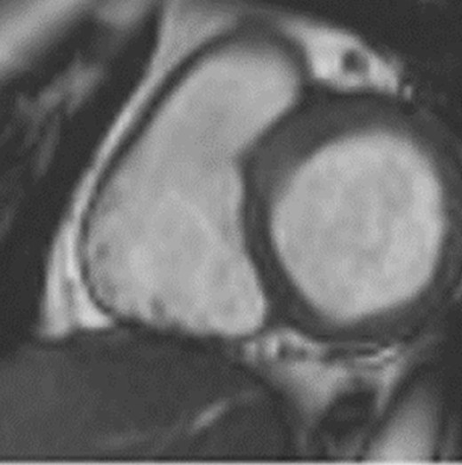
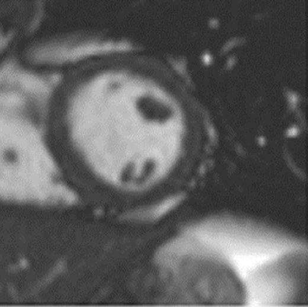
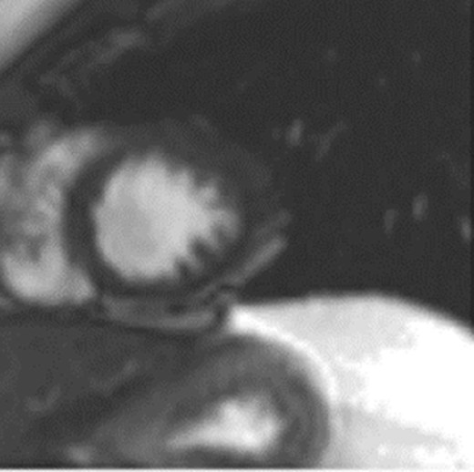
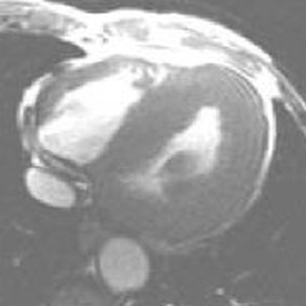
Images: Kramer et al., J Cardiovasc Magn Reson 2020, CC BY 4.0; thickened wall: Germain, Orphanet J Rare Dis 2010, CC BY 2.0
Every scan is taken differently
Each scan type is its own breath-hold with its own slices. Cine movies cover the whole ventricle in a stack of about 9 to 12 slices, planned at an angle off the long-axis views. T1 and T2 maps usually take just three slices (base, middle and apex), and LGE has a stack of its own. The slices land at slightly different positions and angles, so my pipeline places every one back into a single 3D model of the patient’s heart before comparing them.
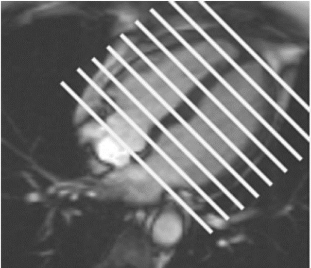
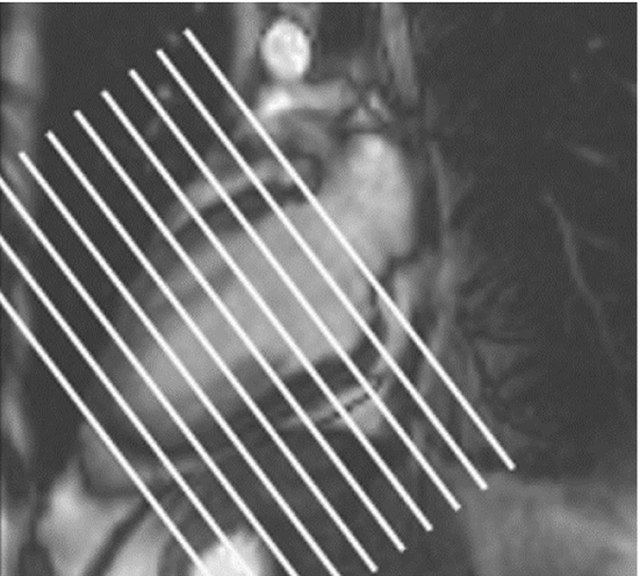
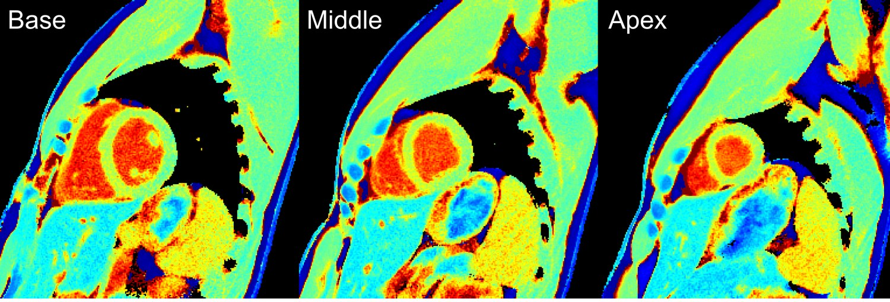
Images: Kramer et al., J Cardiovasc Magn Reson 2020, CC BY 4.0; T1 maps: BiomedNMR, Wikimedia Commons, CC BY-SA 4.0
Four ways to see heart tissue
Each MRI scan type measures a different property of the muscle. Doctors don’t trust any one alone; they read them side by side to tell swelling from scar from diffuse fibrosis.
- Native T1
- How long the tissue takes to recover magnetically. Rises with fibrosis and with swelling, so on its own it can’t say which.
- ECV
- The share of the wall that is space between cells, calculated from T1 before and after contrast. Rises with diffuse fibrosis.
- T2
- How much free water the tissue holds. Rises with swelling and inflammation.
- LGE
- Contrast that lingers in scar about ten minutes after injection, so scar shows up bright against dark healthy muscle.
Case: scar hiding in the middle of the wall
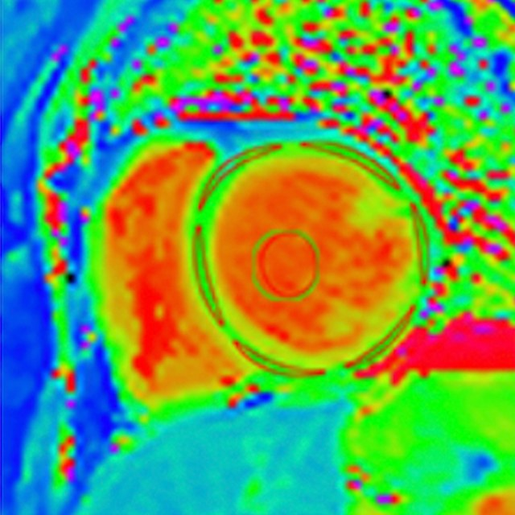
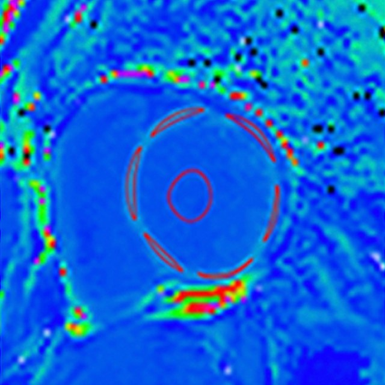
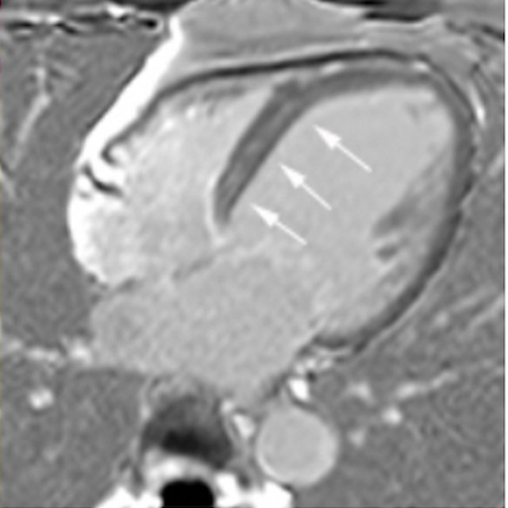
From a patient with dilated cardiomyopathy. The two T1 maps together give the ECV, which shows that the tissue has changed. Only the LGE image shows what and where: a thin stripe of scar inside the septum (arrows).
Images: Cadour et al., J Cardiovasc Magn Reson 2023, CC BY 4.0
Case: swelling and scar together
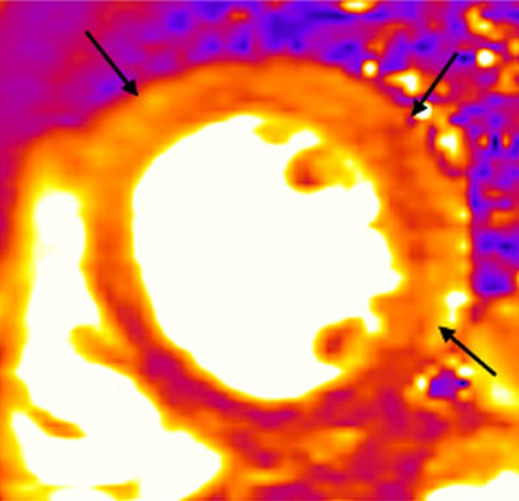
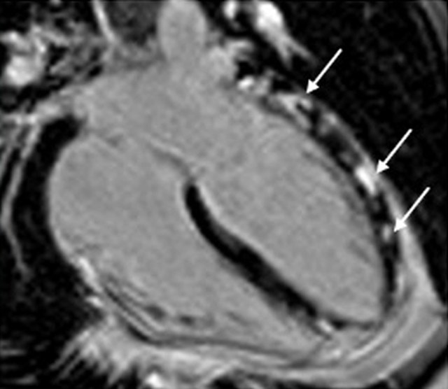
From a patient with acute myocarditis. The T2 map lights up where the muscle is swollen (arrows), and LGE shows scar along the outer wall. Swelling plus scar points to active inflammation, which neither image proves on its own.
Images: O’Brien et al., J Cardiovasc Magn Reson 2022, CC BY 4.0
That side-by-side reading is what my pipeline does automatically, for every small patch of the heart wall.
The output
For each patient, my pipeline makes a map of the heart wall, patch by patch, shown three ways.
- Bullseye maps
- Two target-shaped maps, one for the inner half of the wall and one for the outer half. The top of the heart is the outer ring and the tip is the center, the same layout cardiologists already use.
- 3D heart shell
- The same colors wrapped onto a 3D model of the patient’s heart, like the one at the top of this page.
- MRI overlay
- The colors laid over the original MRI, so a doctor can check each label against the scan.
- Not measured
- Dark core inside scar
- Active scar
- Scar
- Swelling
- Diffuse fibrosis
- One scan off
- Normal
- Poor movement
What each patch tells you
- Tissue label
- One plain-language label, such as scar, swelling, diffuse fibrosis or normal. Patches that couldn’t be measured are shown striped.
- Confidence grade
- A, B or C. The pipeline re-runs each decision with 18 slightly different cutoffs; if the label almost never changes, it gets an A. Solid patches are sure, faded and striped ones less so.
- Motion
- A dashed outline where that part of the wall doesn’t squeeze well as the heart beats. Seeing movement next to the tissue label shows whether a scar or swelling is actually hurting how the heart pumps, not just sitting there.